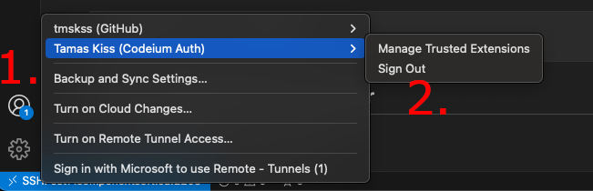
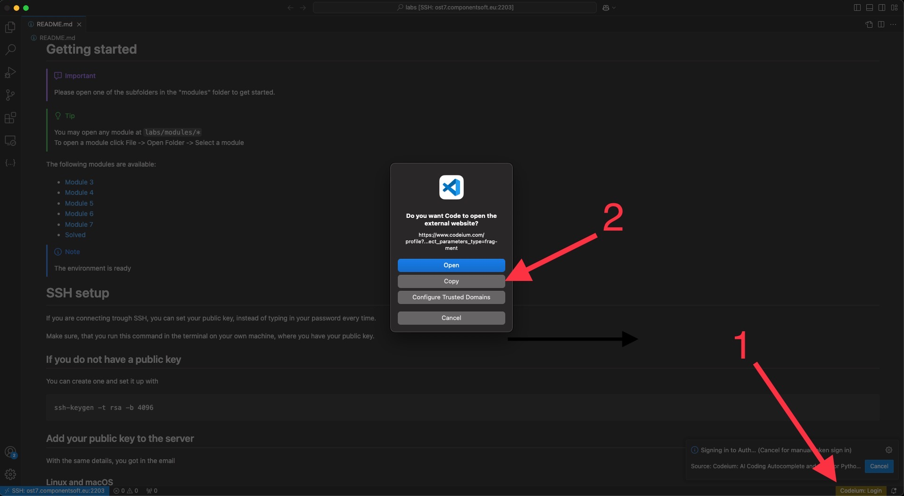

This tutorial will show you how to set up your environment and Codeium credentials. You have two options to use Codeium: VSCode Remote Access (SSH), and the Remote Lab Environment (Guacamole).
This section shows you how to access our environment and log in to Codeium using VSCode Remote Access (SSH).
You will need to do the following steps:
Open VSCode with a terminal command that also sets up the SSH connection:
code --remote ssh-remote+rconsole@: /home/rconsole/labs
If you are already logged in to Codeium in VSCode with your personal Codeium account, please log out.
Log in to Codeium in VSCode, but do not open the link automatically. Copy the link, and open it in an incognito window. This step is necessarry if you have a personal Codeium account that your browser remembered.
Enter the following credentials on the Codeium page:
After you are done with these steps, the environment and Codeium are set up.
Please carefully read the README file to learn about the structure of the environment. An important note is that you need to open only the folder with the name of the current modules number when doing the lab exercises. There are links for that in the README file.
You can copy your public SSH key to our VM if you do not want to insert your password every time you open a new module.